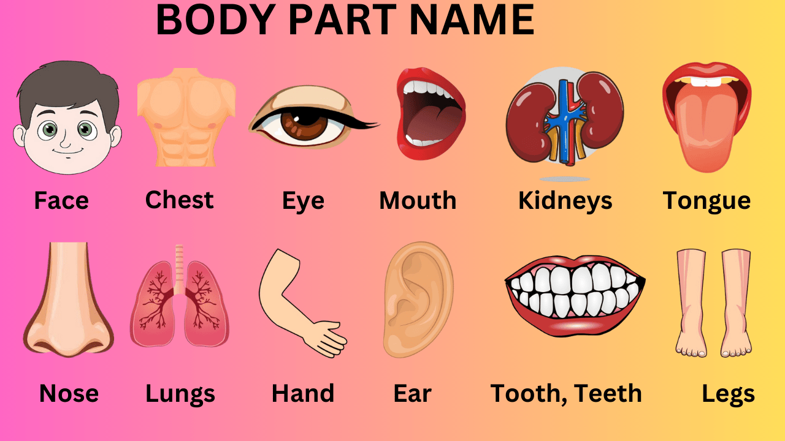
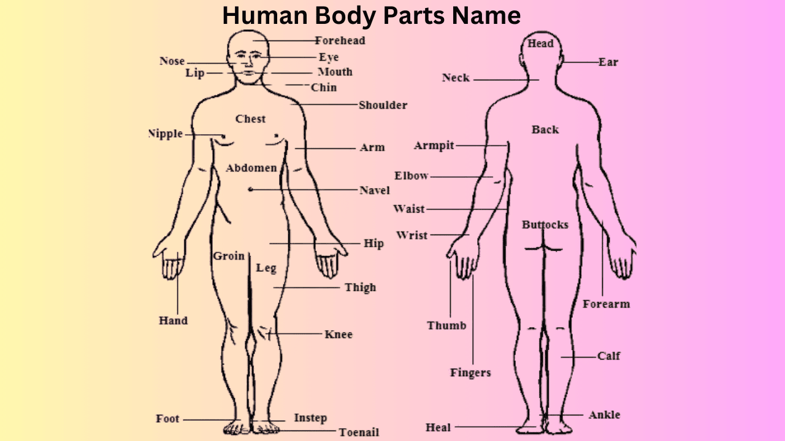

Body Parts Name in English and Hindi
The human body is made up of different body parts or organs that are present inside our body and work to help us live a healthy life. There are many organs in our body that together form a system called an organ system. Tissues are organized to form various body organs like the heart, kidney, lungs, etc. An organ may be formed from different types of tissue arranged together in a peculiar manner.
As children grow up, they become curious to know the names of their body parts and how they work. In this article, we have covered the list of body parts names in English and the list of internal and external body parts names with pictures.
Body parts for Kids
The human body is made up of many organs. Each organ of our body has a different shape and size, and their functions are also different. Like the function of the kidney is to filter the blood, similarly every organ performs different functions.

| Sr. no | body part name in English | Body Part Name in Hindi |
|---|---|---|
| 1 | Head | सिर |
| 2 | Hair | बाल |
| 3 | Forehead | माथा |
| 4 | Eyes | आंख |
| 5 | Eyebrows | भौं |
| 6 | Cheeks | गाल |
| 7 | Ears | कान |
| 8 | Nose | नाक |
| 9 | Teeth, tooth | दांत |
| 10 | Mouth | मुंह |
| 11 | Lips | होंठ |
| 12 | Arm | भुजा, बांह |
| 13 | Shoulder | कन्धा |
| 14 | Waist, Back | कमर, पीठ |
| 15 | Stomach | पेट |
| 16 | Throat | गला |
| 17 | Knee | घुटना |
| 18 | Leg | टांग |
| 19 | Face | चेहरा |
| 20 | Hand | हाथ |
| 21 | Neck | गरदन |
| 22 | Foot | पैर |
| 23 | Nail | नाखून |
| 24 | Moustache | मूंछ |
| 25 | Beard | दाढ़ी |
| 26 | Hip | कूल्हा |
| 27 | Brow | भौंह |
| 28 | Skin | त्वचा, खाल |
| 29 | Fist | मुठ्ठी |
| 30 | Blood | रक्त |
| 31 | Beast | स्तन |
| 32 | Navel | नाभि |
| 33 | Elbow | कोहनी |
| 34 | Nipple | स्तन का अगला भाग |
| 35 | Armpit, Womb | बगल, कांख |
| 36 | Chin | ठुड्डी |
| 37 | Brain | दिमाग |
| 38 | Eyelid | पलक |
| 39 | Tongue | जीभ |
| 40 | Toe | पैर की उंगली |
| 41 | Body | शरीर |
| 42 | Larynx | कंठ |
| 43 | Temple | कनपटी |
| 44 | Wrist | कलाई |
| 45 | Kidney | गुर्दा |
| 46 | Chest | छाती |
| 47 | Jaw | जबड़ा |
| 48 | Thigh | जाँघ |
| 49 | Liver | जिगर |
| 50 | Heart | ह्रदय |
| 51 | Nostril | नथुना |
| 52 | Nerve, Vein | नस |
| 53 | Paw | पंजा |
| 54 | Rib | पसली |
| 55 | Muscles | माँसपेशी |
| 56 | Lung | फेफड़ा |
| 57 | Spine | रीढ़ |
| 58 | Bone | हड्डी |
| 59 | Skull | खोपड़ी |
| 60 | Palm | हथेली |
| 61 | Bellly | पेट |
| 62 | Bun | बालों का जूडा |
| 63 | Calf | पिंडली |
| 64 | Uterus | गर्भाशय |
| 65 | Rump | चुतड |
| 66 | Palate | तालु |
| 67 | Index Finger | तर्जनी |
| 68 | Snout | थूथना |
| 69 | Molar Teeth | दाढ़ |
| 70 | Pulse | नाड़ी |
| 71 | Bile | पित्त |
| 72 | spleen | तिल्ली |
| 73 | Artery | धमनी |
| 74 | Middle Finger | बीच की ऊँगली |
| 75 | Eyeball | आँख की पुतली |
| 76 | Eyelash | बरौनी |
| 77 | Embryo | भ्रूण |
| 78 | Saliva | लार |
| 79 | Trachea | स्वास नली |
| 80 | Finger | अंगुलियाँ |
| 81 | Thumb | अंगूठा |
| 82 | Small Intestine | छोटी आंत |
| 83 | Large Intestine | बड़ी आंत |
| 84 | Urinary Bladder | मूत्राशय |
| 85 | Heel | एढ़ी |
Body part with thier function
Heart: The heart pumps blood and oxygen throughout the body and expels waste products (carbon dioxide) through the lungs. The heart is divided into four chambers. Each chamber is separated by valves that direct the flow of blood.
kidney: Kidneys remove waste products from the blood and expel them through urine and control your blood pressure. The kidneys are a special filter system for your body and control the levels of many substances in the blood.
Liver: The liver is a vital organ in the human body with many essential functions, including detoxification, metabolizing drugs, processing food nutrients, regulating body metabolism, blood clotting, metabolism of nutrients (carbohydrate, fat, protein metabolism), storage of nutrients, blood clotting, synthesis of plasma proteins, and breakdown of hemoglobin.
Stomach: The stomach is a very important part of the digestive system. It holds the food and mixes acids and enzymes for the breakdown of food. Its main functions are storage of food, secretion of digestive juices, mechanical digestion, absorption, and regulation of food movement.
Lungs: The lungs are essential organs in the respiratory system, responsible for the process of gas exchange. When you breathe, air enters your lungs, and oxygen from that air moves into the blood, and carbon dioxide, a waste gas, moves from your blood into the lungs and out.
External and Internal Body Parts Name
List of External Body Parts with Location
The human body is a complex structure; understanding the location of these body parts is essential to learning anatomy, increasing body awareness, and improving communication about health and fitness. Below is a comprehensive list of external body parts classified based on their location on the body.
| Body Part | Location |
|---|---|
| Face | The front part of the head |
| Head | The uppermost part of the body |
| Eye | Located in the sockets of the skull |
| Ears | Near the temples |
| Nose | Above the mouth |
| Mouth | Below the nose |
| Neck | Below the head |
| Shoulders | Connecting the arms to the torso |
| Arms | Extending from the shoulders to the hands |
| Hands | At the end of the arms |
| Chest | Between the neck and abdomen |
| Breasts | Located on the chest (Female) |
| Back | The posterior part of the torso |
| Abdomen | The region of the body between the chest and pelvis |
| Waist | Above the hips |
| Hips | Where the torso meets the legs |
| Legs | Extend from the hips to the feet |
| Knees | The joint in the middle of the leg |
| Feet | At the end of the legs |
| Fingers | On the hands |
| Toes | On the feet |
| Forehead | Above the eyebrows |
| Eyelid | Covering over the eye |
| Eyebrow | Strip of hair above the eye socket |
| Lips | structure forming the mouth |
| Calf | Lower part of the leg |
| Heel | Back part of the foot |
| Thigh | Upper part of the leg |
| Knees | Middle joint of the leg |
| Ankle | connecting foot to leg |
| Tongue | In the mouth |
List of Internal Body Parts with Location
Internal organs play a vital role in maintaining life. These organs are located in specific areas of the body, each contributing to the overall functionality of the body. Below is a classified list of the internal organs of the body along with their location.
| Body Part | Location |
|---|---|
| Brain | Located in the skull |
| Heart | In the chest |
| Lungs | In the chest cavity, one on the left side and one on the right side of the heart |
| Esophagus | Behind the trachea, in the chest |
| Stomach | In the upper abdomen |
| Liver | On the right side of the abdomen |
| Small Intestine | Located in the central and lower part of the abdomen |
| Large Intestine | Surrounds the small intestine |
| Kidneys | On either side of the spine |
| Bladder | Just above the pelvic region |
| Pancreas | Behind the stomach |
| Spleen | On the left side of the abdomen |
| Gallbladder | Below the liver |
| Reproductive Organ (female) | In the pelvis region |
| Reproductive organ (male) | In the pelvic region |
| Spinal Cord | Runs along the back inside the vertebral column (spine) |
| Trachea | In the neck and upper chest |
| Arteries | Throughout the body, arteries carry oxygen-rich blood |
| Veins | Throughout the body, veins carry deoxygenated blood back to the heart. |
| Blood Vessels | Throughout the body, capillaries are the smallest blood vessels that connect arteries to veins |
| Testes (male) | Pelvic region (male only)he |
| Prostate (male) | Pelvic region (male only) |
| Uterus (female) | Pelvic region (female only) |
| Ovaries (female) | Pelvic region (female only) |
Human Body Parts classified
Head and Face:
1. Head
2. Nose
3. Ears
4. Tongue
5. Mouth
6. Lips
7. Forehead
8. Eye
9. Eyebrow
10. Chin
11. Eyelid
12. Tooth(Teeth)
13. Cheeks
14. Scalp
Upper Limbs
1. Chest
2. Shoulder
3. Arm
4. Hand
5. Fingers (Thumb, index, middle, ring, pinky)
6. Wrist
7. Elbow
8. Breast (female)
Back and Tosrso
1. Abdomen
2. Navel
3. Hips
4. Waist
5. Neck
6. Thorax
Lower Body
1. Hips
2. Thighs
3. Knees
4. Legs
5. Heel
6. Arches
7. Calf
8. Sole
Function of Organ
Integumentary System
Skin: Protects the body, regulates temperature, and provides sensory information.
Hair/Nails: Protect and support the skin.
Nervous System
Brain: Controls thoughts, memory, emotions, touch, motor skills, vision, breathing, and every process in the body.
Spinal Cord: Transmits signals between the brain and the rest of the body.
Nerves: Carry electrical signals throughout the body.
Circulatory System
Heart: Pumps blood to deliver oxygen and nutrients to tissues and remove waste products.
Blood Vessels (arteries, veins, capillaries): Transport blood throughout the body.
Respiratory System
Lungs: Exchange oxygen and carbon dioxide between the air and the blood.
Trachea and Bronchi: Carry air to and from the lungs.
Digestive System
Mouth: Starts mechanical and chemical digestion
Esophagus: Moves food to the stomach.
Stomach: Breaks down food with acid and enzymes.
Gallbladder: Stores bile for fat digestion.
Small Intestine: Absorbs nutrients from food.
Rectum/Anus: Stores and eliminates solid waste.
Urinary System
Kidneys: Filter blood, remove waste, and regulate fluids and electrolytes.
Ureters: Carry urine from the kidneys to the bladder.
Bladder: Stores urine.
Urethra: Releases urine from the body.
Endocrine System
Pituitary Gland: Controls other glands and many body functions.
Thyroid: Regulates metabolism.
Immune & Lymphatic Systems
Spleen: Filters blood and helps fight infections.
Lymph Nodes: Filter lymph and store white blood cells.
Immune & Lymphatic Systems
Spleen: Filters blood and helps fight infections.
Filter lymph and store white blood cells.
Reproductive System
Ovaries (females): Produce eggs and hormones.
Testes (males): Produce sperm and testosterone.
Uterus (females): Supports fetal development during pregnancy.
FAQs on Body Parts Name in English
How many sense organs are there?
Sense organs are specialized organs that contain sensory neurons. The five sense organs are the nose, ears, skin, eyes, and tongue.
What are the 5 parts of the human body?
The human body has five basic parts: neck, legs, head, torso, and arms.
How does oxygen reach the body?
Red blood cells take up oxygen and carry it to all cells.
What are the important internal organs?
important internal organs are stomach, pancreas, heart, liver, kidney, intestine, and brain.
How many cells are there in the human body?
The human body contains approximately 37.2 trillion cells.